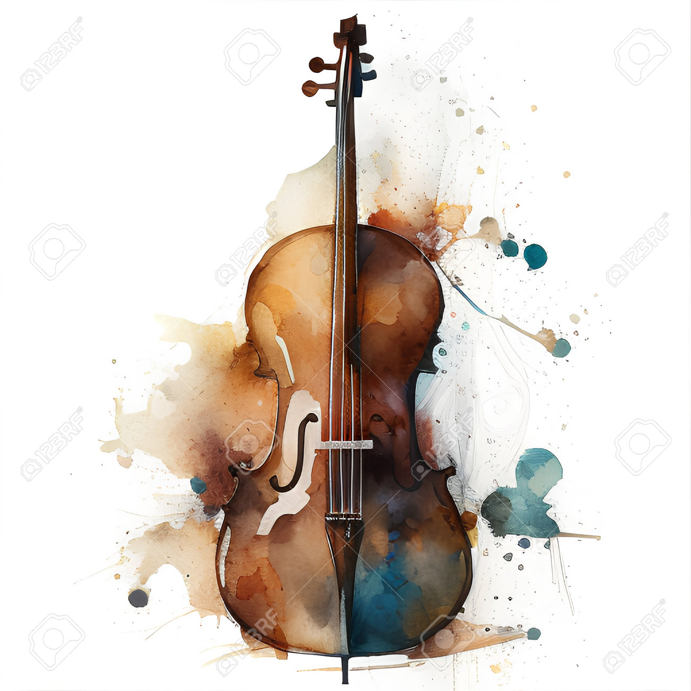

Pianoforte

Il pianoforte è uno strumento a corde percosse da martelletti, i quali vengono azionati da tasti. I tasti sono premuti dalle dita dell'esecutore.
In un pianoforte moderno vi sono tasti bianchi e tasti neri per un numero totale di ottantotto.
Violino
Il violino è composto da una cassa armonica e dal manico innestato nella parte superiore della cassa.
La cassa armonica, tradizionalmente di lunghezza compresa tra i 34,9 ed i 36,2 centimetri, è costruita in legno di abete rosso e la forma ricorda vagamente un otto.
Chitarra

La chitarra è uno strumento musicale a corde, costituito da una cassa a forma di 8 e da un manico alle cui estremità si attaccano più corde (di solito 6) che il suonatore mette in vibrazione con le dita o con il plettro. è uno strumento di origine araba